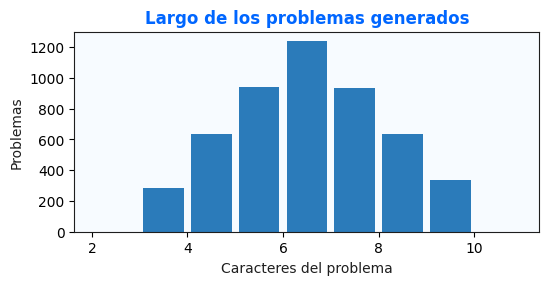
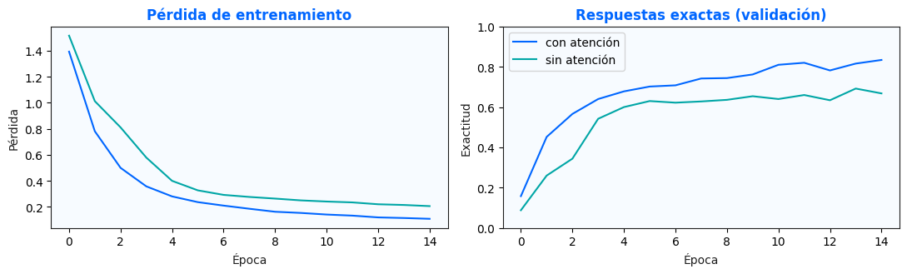
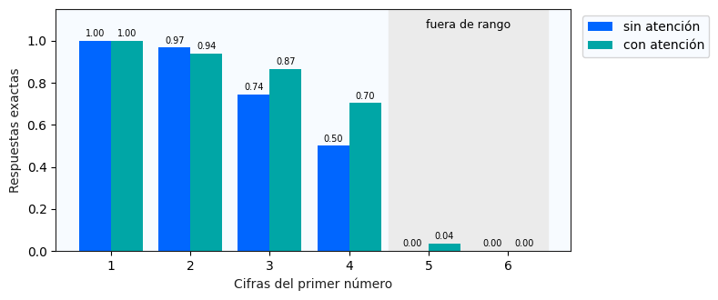
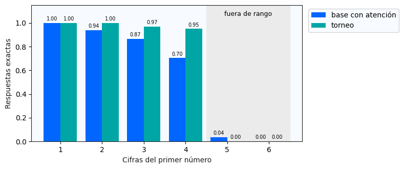
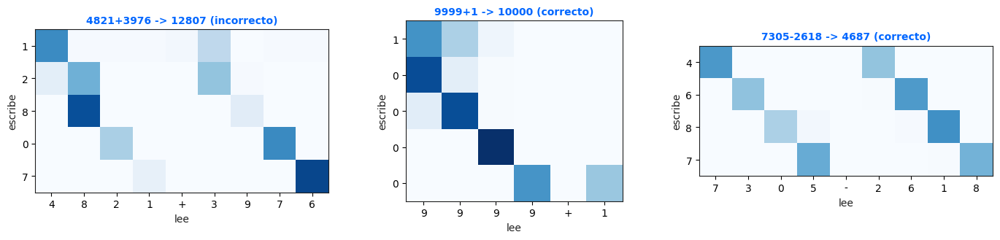
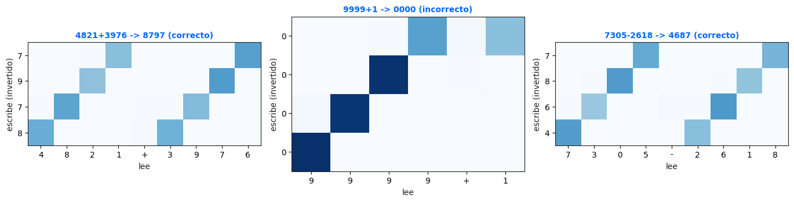
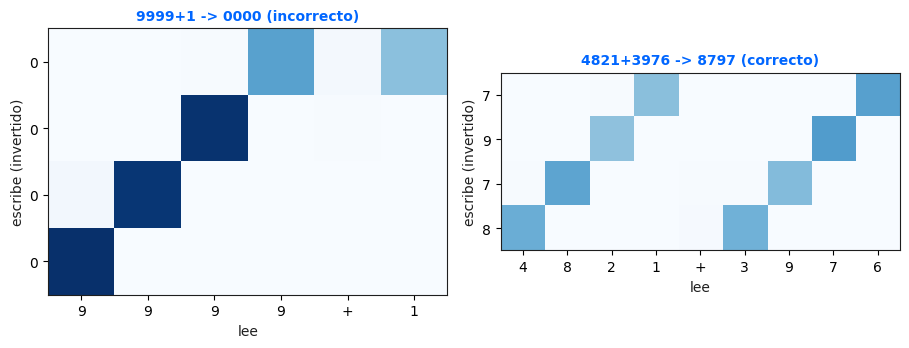

Un solo vector es un cuello de botella
El contexto dinámico permite que cada paso del decoder consulte una combinación distinta de los estados del encoder.
ej = vT tanh(Wqs + Wkhj)α = softmax(e)c = Σ αjhj
Deep Learning 2026 / Sección 30 / Laboratorio individual
Proceso completo de una calculadora neuronal seq2seq: desde la atención aditiva hasta los casos que demuestran dónde deja de generalizar.
El estado recurrente debe conservar una dependencia que atraviesa todas las columnas.
Una secuencia entra; otra secuencia debe salir carácter por carácter.
Sumas y restas no negativas generadas al azar.
Reconstruible mediante Calculadora y CONFIG.
Sin NumPy ni nn.MultiheadAttention.
Verificaciones intactas y salidas visibles.
Dos lecturas orientaron la arquitectura y una decisión experimental.
El contexto dinámico permite que cada paso del decoder consulte una combinación distinta de los estados del encoder.
La aritmética manual comienza por las unidades. Por eso se planteó invertir la salida y dejar intacta la entrada.
Si el decoder escribe unidades primero, puede transportar el acarreo en su estado recurrente.
Fuentes académicas: Bahdanau, Cho y Bengio (2014); Sutskever, Vinyals y Le (2014).
El generador crea problemas nuevos sin depender de un archivo de datos.
La muestra de entrenamiento cubre menos de 0.033% de este subconjunto.

La arquitectura conserva el machote y completa únicamente los bloques solicitados.
Las celdas de verificación permanecen idénticas al machote.
puntajes = v(tanh(
W_q(estado).unsqueeze(1)
+ W_k(salidas_enc)
)).squeeze(-1)
puntajes = puntajes.masked_fill(
mascara_pad, float("-inf")
)
pesos = softmax(puntajes, dim=-1)
contexto = bmm(pesos.unsqueeze(1), salidas_enc)emb = embedding(token_previo)
contexto, pesos = atencion(
estado, salidas_enc, mascara_pad
)
nuevo_estado = gru(
cat([emb, contexto]), estado
)
logits = salida(
cat([nuevo_estado, contexto])
)Mismos datos, capacidad, semilla y optimización para atribuir las diferencias.
Límite conocido: una sola semilla no estima la variabilidad entre entrenamientos.
La exactitud exige que toda la respuesta coincida; un dígito incorrecto invalida el ejemplo.

+16.45 pp a favor del contexto dinámico.
Cinco y seis cifras se evalúan, pero nunca se usan para entrenar.

| Cifras | Atención | Sin atención | Diferencia |
|---|---|---|---|
| 1 | 100.00% | 100.00% | 0.00 pp |
| 2 | 94.00% | 96.67% | −2.67 pp |
| 3 | 86.67% | 74.33% | +12.34 pp |
| 4 | 70.33% | 50.00% | +20.33 pp |
| 5 | 3.67% | 0.00% | fuera de rango |
| 6 | 0.00% | 0.00% | fuera de rango |
La red genera internamente unidades primero y revierte el texto al presentar la respuesta.

torneo_22193.ptHuella94e198ec75ecCada fila es un token generado; cada columna, un carácter de entrada.


Los pesos cambian por paso y revelan selección posicional. No demuestran por sí solos que cada celda implemente una operación simbólica.
Todos respetan el máximo de cuatro cifras y fueron evaluados por el checkpoint final.
| Problema | Predicción | Correcta | Debilidad |
|---|---|---|---|
9999+1 | 0000 | 10000 | Nueva cifra y acarreo global |
9998+2 | 0000 | 10000 | Acarreo desde unidades |
9999+9999 | 18998 | 19998 | Acarreos simultáneos |
1000-999 | 11 | 1 | Préstamo y salida corta |
4000-3999 | 001 | 1 | Préstamos y ceros iniciales |

9999+1 frente a 4821+3976.El repositorio separa machote, ejecución, pesos, evidencia y documentación.
7dd56f9acf5dsin atención 11a6346d696dtorneo 94e198ec75ecClave oficial 5978 · checkpoint cargado sin reentrenamiento · 80.5/100.
20/20 · CalentamientoPuntaje completo: 15 de 15.
17/20 · Cuatro cifras25.5 de 30 puntos.
16/16 · AcarreosPuntaje completo: 40 de 40.
0/10 · Jefe finalCinco cifras: 0 de 15.
El formulario confirmó el envío de las respuestas del torneo.
5978.186,767.94e198ec75ec.La evidencia completa está en torneo_5978.json.
Conclusión basada en evidencia
Acarreos16 de 16: el orden invertido fue una inductiva efectiva.
Cuatro cifras17 de 20: desempeño alto, con tres fallos de préstamo.
Cinco cifras0 de 10: la red no extrapoló fuera del rango entrenado.
94e198ec75ec